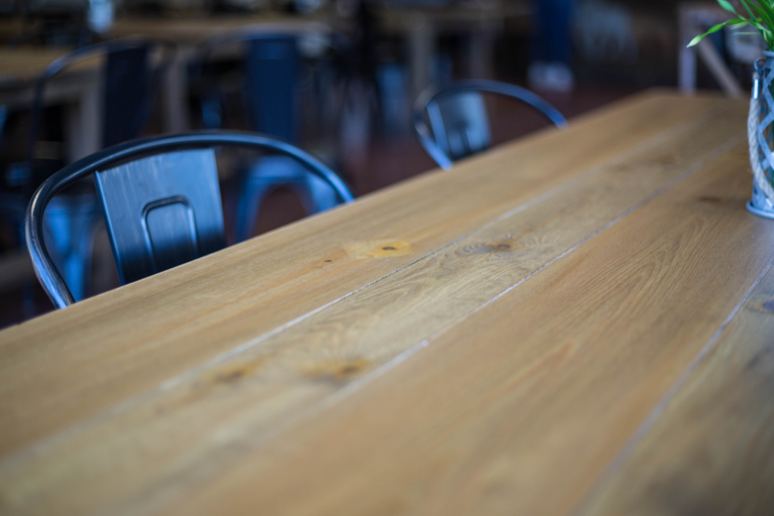

ようこそ、Cafe Batakeへ
Cafe Batakeは、もとはガレージだった建物を改装してつくったカフェです。
コンクリートやシャッターの無骨な佇まいはそのままに、店の中はご夫婦ふたりの手であたたかく仕上げられています。
オーナーが焼く手作りのケーキと、奥様が編む手編みぐるみ。ふたつの手仕事が、ひとつの空間に並んでいます。
新潟県燕市の住宅街で、気さくなオーナーとご夫婦がお客様をお迎えしています。


ふたりの手仕事が、この店をつくっています
オーブンから届くケーキの香りと、店内いっぱいに並ぶ手編みぐるみ。
オーナーが焼き、奥様が編む。ご夫婦それぞれの手仕事が、Cafe Batakeの時間をつくっています。
手作りケーキ手編みぐるみ
こだわりの物語を見る »お客様の声
ここのシフォンケーキが絶品です。店内も奥様の可愛い手作り編みぐるみグッズがたくさんあって素敵です。
オーナー手作りケーキはとても美味しかったです。気さくなオーナーで、またお話にいきたいです。
アクセス
〒959-1261 新潟県燕市秋葉町4丁目6-34
駐車場が少ないため、乗り合わせでのご来店にご協力いただけますと幸いです。